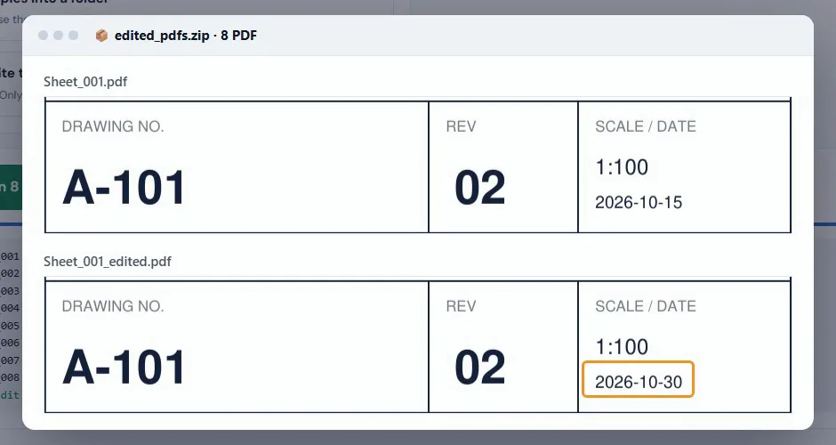

How to change title block text in many PDF drawings without CAD
Fix a date, a revision letter or a status in the title block of a whole set of PDF drawings at once, without opening AutoCAD or Revit and printing everything again.
Your files stay on your computer. Nothing is uploaded.
Short answer
Open Edit PDF Text, add the PDFs, drag a box around the field in the title block, type the old text and the new text, then click Replace. Only text inside the box changes, on every file, and you download edited copies.
Why a small title block change takes so long
The set is printed to PDF and ready to go, and then the issue date changes, or the status should say FOR CONSTRUCTION instead of FOR APPROVAL. The usual fix is to open every sheet in CAD, change the field and print the whole set to PDF again.
PDF editors can change text, but one file at a time, and finding and replacing across a folder often hits the same words in the drawing itself, not only in the title block.
Step by step
Add the PDFs
Click Choose PDF files, or Choose a folder for a whole set. Every drawing you add will be changed in the same way.
Box the field
On one drawing, drag a box around the field you want to change, for example the date in the title block. Only text inside this box is changed, so the same words elsewhere on the sheet stay as they are.
Type the old and new text
Type the text to find and what to replace it with. The tool shows in how many files the text was found inside the box.
Choose how to save
Download copies (the originals stay as they are), save copies into a folder, or overwrite the original files in Chrome or Edge.
Replace
Click Replace. The new text copies the original font size, width and position, so the title block looks the same.

Good uses
- Issue date or revision date on a whole set.
- Status: FOR APPROVAL to FOR CONSTRUCTION.
- A project number or client name that was spelled wrong.
- The revision letter, when the drawings did not change.
If the text does not look right
The new text uses the closest font to the original by default. Under Text style you can pick a font, a size, bold or italic, or the text angle for fields that read upward. Scanned drawings have no text to replace; use the PDF from CAD.
Edit your title blocks now
Free, runs in your browser, and your drawings never leave your computer.
Open Edit PDF Text →Questions
Can I edit the title block of many PDFs at once?
Yes. Add all the PDFs, draw one box around the field and the text inside that box is replaced on every file.
Will other text on the drawing change?
No. Only text inside the box you drew is changed.
Do I need AutoCAD, Revit or Acrobat Pro?
No. It runs in your browser and works on the PDF files directly.
Are my drawings uploaded?
No. The PDFs are changed by your browser on your own computer and nothing is sent to a server.
Does it work on scanned drawings?
No. A scanned page is a picture with no text in it. Use the PDF printed from CAD.